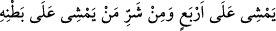

buyurdu: “Bu Allah’ın bana lütfettiği bir ikrâmıdır.
Allah’ım, iki ayak üzerinde yürüyen canlıların şerrinden, dört ayak üzerinde
yürüyen canlıların şerrinden ve sürünerek giden canlıların şerrinden sana
sığınırım!”[61]
Enîsü’l-vahde adlı eserde anlatılan şu hâdise de nükteli haberlerdendir: “Bir adamın
güzel bir hanımı vardı. O adam, muhabbetin ayrılmaz özelliklerinden olan aşırı
kıskançlığından hanımının zülfünün ucundan rüzgarın bile geçmesine, cihan güneşinin
bile yüzüne dokunmasına dayanamazdı.
Rüzgarın eğer âşığın kıskançlığından haberi olaydı
Korkusundan o hanımın zülfünün ucundan geçmezdi
Adam evin etrafını ve çevresini öyle koruma ve kontrol altına almıştı ki başkalarının
nazarından dâimâ uzak ve kapalıydı. Kadın birkaç gün o dar evde kaldıktan sonra ev
ona dar gelmeye başladı. Kocasına: “Beni daha ne zamana kadar böyle bağlı tutacaksın?
Nerede tutulmuş bağlanmış biri varsa kafesten kaçmak ister.
Beni daha fazla bağlı tutma. Kadın eğer kötü işli ve habis olursa hiçbir mahluk onu
hıfz edip tutamaz. Eğer âbide, afîfe ve iyi işli olursa cihanda olan her şeyden hatta
gökteki aydan bile mahcub olur ve başını öne eğdirecek fiil işlemez. Bu bağ ve hapisten
elini kaldır, beni benim örtülü oluşuma ısmarla ki; benim iffetim beni emsalsiz olarak
korur ve benzersiz olarak görüp gözetir.”
Kadın bu türlü ne kadar söz söylediyse kocasına dinletemedi. Adam kadının
muhâfazasında fazlasıyla gayretli idi. Kadın kocasına bir delil göstermek istedi.
Hanımın civarında yaşlı bir kadın vardı. Zaman zaman kapının deliğinden onunla
konuşurdu. Bir gün o yaşlı kadını çağırdı. Yaşlı kadınla aynı evde kalan bir genç vardı.
Ona haber gönderdi ve “Ben bir müddettir aşka tutulmuşum. Senin aşkınla inliyorum.
Sana ulaşmak devletini ve sana kavuşmak saâdetini istiyorum.” dedi.
Yaşlı kadın elçilik görevini tebliğ eyledi. Genç o hanımın güzelliğinin ve cemâlinin
medhini işitmişti. Sevincinden sıçrayıp raks etti. Neşe ve coşkusundan aşk havasında
şahin gibi kanatlandı. Genç şöyle haber gönderdi:
Cânânım, sanki benim dilimden söz söylersin
Ya da kendi lisanından söz söylersin
Senin kendi canı olmasını istemeyecek kimse yoktur